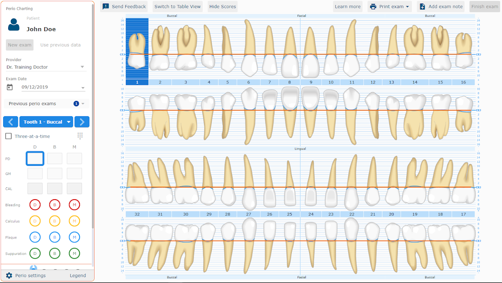

Perio charting was a feature nobody used. We made it the reason people bought the product.
Curve Dental's periodontal charting module was built in Flash, technically obsolete, and so hard to use that most hygienists gave up and went back to paper. When Flash's end-of-life forced the issue, I led the redesign — from clinical research through to a module hygienists now use for thousands of exams a day.
Periodontal charting is a fast-paced, precision-dependent workflow that hygienists perform during every patient exam. The existing module was so difficult to use that most clinicians avoided it entirely, defaulting to paper charts instead. I led the team that rebuilt it from the ground up, with a focus on speed, accuracy, and flexibility to accommodate different clinical workflows.
.PNG)
A feature so unusable, customers avoided it entirely
Periodontal charting is an essential clinical tool — hygienists probe around each tooth to assess gum health, calling out numbers in sequence as an assistant records them. Curve Dental's existing module was built in Flash, technologically out of date, and difficult enough to use that most customers didn't use it at all, defaulting to paper charts instead.
Decision-makers had deprioritised the rebuild in favour of other work, until Flash's discontinuation forced a hard deadline. The brief wasn't just "make it work again" — it was to make the module genuinely competitive, fast, and accurate enough that clinicians would actually choose it over a pen and paper.
Lead designer, end to end
I was the lead designer on this project and involved at every stage — formulating customer needs, defining the clinical requirements of the module, and creating the graphics used in the final product. I worked directly with key stakeholders and target customers through alpha, beta and general availability releases.
"How do you represent a lot of clinical data clearly — for a process every practice does slightly differently?"
Problem discovery
The first step was talking to customers, not sketching solutions. Throughout consultation, conceptualisation and design — right through alpha and beta testing — customer feedback drove the process. I visited dental practices in person and interviewed hygienists and dentists remotely, documenting findings and sharing them with the team.
What surfaced quickly was that periodontal exams don't follow one standard method. Clinicians disagreed, often strongly, about which data points mattered, what order to examine the mouth in, and how results should be displayed. Rather than force one workflow, the research made the case for building flexibility directly into the product:
- Every interaction needed a keyboard shortcut as well as visual entry, and had to work on touchscreens — hygienists call out results in rapid sequence, and the software had to keep pace.
- Tooth representation had to be anatomically accurate and consistent with the separate charting module — a gap the previous system failed on badly.
- Both a graphical view and a tabular/numerical view were needed — different clinicians preferred different formats, especially when explaining oral health to patients.
- Hygienists were unwilling to change the order they examined the mouth in to suit the software. The software had to accommodate them, not the other way round.
- Every data point — pocket depth, gingival margin, bleeding, calculus, suppuration, plaque, mobility, furcation — needed to be optional, since practices varied in what they chose to record.

Design definition
A prior project rebuilding Curve's general dental charting module had already taught a hard lesson: a complicated 3D render of the mouth was the wrong direction. For perio charting, I created a set of graphical illustrations based on real anatomical data, built in SVG — fast enough to render in a cloud application, and precise enough to support the dense data of a full periodontal exam.
I built Axure RP prototypes of the data-entry table to test how interactions would actually feel, and a full data-view spreadsheet so developers and product managers understood every data point the system needed to support. Keyboard-only charting was a guiding principle throughout — the shortcuts had to be as intuitive and fast to learn as the software itself.
"There is no perfect spaghetti sauce — and there's no one-size-fits-all periodontal exam."
Design validation
Validation ran mainly through an alpha trial with the customers who'd shaped the research phase, supplemented by in-app survey feedback as new questions came up. The data settled genuine disagreements: on the "start condition" setting alone, half of hygienists surveyed wanted to chart gingival margin first, the other half insisted on pocket depth. Feedback on exam ordering was similarly split, and the team ultimately built six separate path options to accommodate it.
During the invite-only alpha, some hygienists ran full periodontal exams on volunteers to test the software's speed and effectiveness under real conditions — feedback that directly shaped refinements going into beta.
A module built around how clinicians actually work
The final design combined the accurate SVG tooth graphics with a personalisation layer covering start condition, exam ordering, which teeth to skip, what to chart, and alert thresholds. Finished exams could be locked to prevent accidental edits, with a deliberate step required to re-open them — protecting the clinical record without slowing down active charting. Values could be added individually or three at a time to match the pace of a real exam.
Video walkthrough
Here's a short video showing the final module in action on a touch screen.
From a feature nobody used to a headline selling point
After release, the module was used for thousands of periodontal exams every day. Negative feedback dropped substantially, and the feature moved from something the sales team avoided discussing to a primary selling point for the product.
Negative customer feedback on the feature dropped substantially after release, and faster charting helped increase daily clinical throughput for practices. Most notably, the feature moved from something the sales team avoided discussing to a primary selling point for the product.
What carried forward into product management
Involving clinicians throughout — not just at the start — was what made this project work. Getting the tooth anatomy right, and understanding why users were so uncompromising about their individual preferences, only came from staying close to customers through the whole build. That discipline — research before design, validation before ship — is the same one I carried directly into product management afterward.